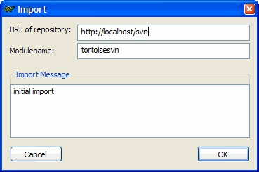
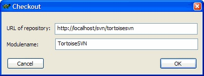
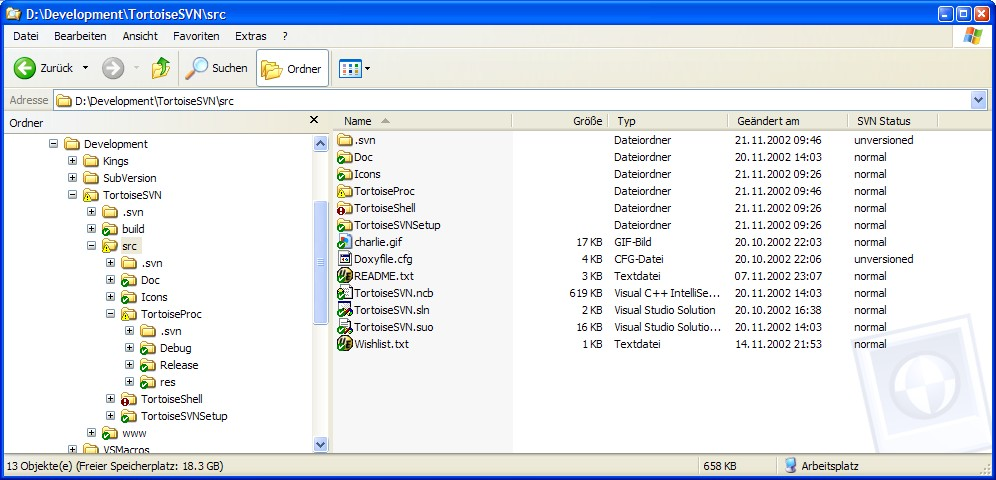
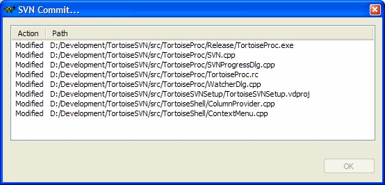
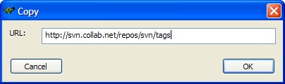
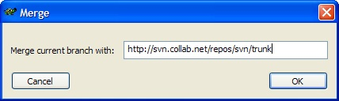

This document describes day to day usage of the TortoiseSVN client. It is not an introduction to version control systems, and not an introduction to SVN. It is more like a place you may turn to when you know approximately what you want to do, but don't quite remember how to do it.
It is assumed that you already have installed TortoiseSVN.
If you're not familiar with Subversion the you should read "Subversion: The Definitive Guide" first.
The terminology used in the SVN documentation, and thus also in TortoiseSVN, may differ from terminology used in other source repository systems. In an attempt to avoid confusion, we provide a short list of the most essential terms. Please make yourself familiar with these words before diving into the rest of this document.
If you don't want to create a local repository and use a server based repository instead then you may skip this chapter.
You can create a local repository with TortoiseSVN very easily:
To access your local repository you need the path to that folder. Just remember that Subversion expects all repository paths in the form "file:///C/SVNRepository/"
Before you import your project into a repository you should:
Now select the parent folder of your directory structure in the windows explorer and right click to bring up the context menu. Select the command "Import..." which brings up a dialog box:

In this dialog you have to enter the URL of the repository you want to import your project into. Don't forget that for also local repositories you have to enter the path in URL form.
The modulename is the name of your project or whatever you want. Usually you use the name of the directory you selected to bring up the context menu (filled in by default).
The import message is used as a log message. Since you usually just started your project a default "initial import" is filled in by TortoiseSVN.
As soon as you press the OK button TortoiseSVN imports the complete directory tree including all files into the repository. Please note that this doesn't put your copy of the project NOT under version control yet. To get a versioned working copy you need to Checkout the version you just imported!
To obtain a working copy you need to checkout it from a repository.
Select a directory in windows explorer where you want to place your working copy. Right-click to bring up the context menu and select the command "Checkout..." which brings up a dialog box:

If you enter a modulename then a directory with that name is created. If the field is left empty then the files are stored directly in the folder you selected in the explorer.
It is recommended that you check out only the "trunk" part of the directory tree. If you specify the parent path of the directory tree in the URL then you might end up with a full harddisk since you will get a copy of each branch and also each tag of your project!
Now that you have checked out a working copy from a Subversion repository you can see your files in the windows explorer with changed icons. TortoiseSVN adds to each file icon a so called "overlay icon" which overlaps the original file icon. Depending on the Subversion status of the file the overlay icon is different. A fresh checked out working copy has a green checkmark as overlay. that means the Subversion status is "normal". As soon as you start editing a file the status changes to "modified" and the icon overlay then changes to a exclamation mark. That way you can easily see which files were changed since you last updated your working copy and need to be commited. If during an update a "conflict" occurs then the icon changes to a yellow exclamation mark.
The foder icons also have icon overlays displayed. By default, only the status of the folder itself is shown. But you can change that behaviour in the settings (context menu, Settings...) so that the status of folders is shown recursively. This will make the icon overlays for folders slower and is therefore not recommended on slower machines. I'm using that setting on my machine (PIII, 700MHz, 512MB RAM) without problems. With this setting each folder shows the status of all files below it, where status "conflict" overrides "modified" and "modified" overrides "normal". So you can easily see if in a folder theres a file with a conflict or a file which is modified.

Unlike TortoiseCVS (the CVS shell integration) no overlay icon for unversioned files is shown.
Occasionally you may want changes done by others to get incorporated in your local working copy. The process of getting changes from the server to your local copy is known as updating. Updating may be done on single files, a set of selected files, or recursively on entire directory hierarchies. To update, select the files and/or directories you want, right click and select "Update" in the TortoiseSVN submenu. A window will pop up displaying the progress of the update as it runs.

Changes done by others will be merged into your files, keeping any changes you may have done to the same files. The repository is not affected by an update.
If you receive reports of conflicts during the update, please read the "resolving conflicts" section.
Sending the changes you made to your working copy is known as committing the changes. But before you commit your changes you really should do an update first. See the previous chapter on how to do that.
As soon as you updated your working copy and resolved possible conflicts you are ready to commit your changes. Select any file and/or folders you want to commit and select "Commit" in the context menu. A Dialog appears displaying the progress of the commit.

Once in a while, you will get a conflict when you update your files from the repository. A conflict occurs when two or more developers have changed the same few lines of a file. As Subversion knows nothing of your project, it leaves resolving the conflicts to the developers. Whenever a conflict is reported, you should open the file in question, and search for lines starting with the string <<<<<<<. The conflicting area is marked like this:
<<<<<<< filename
your changes
=======
code merged from repository
>>>>>>> revision
Also, for every conflicted file Subversion places three additional files in your directory:
This is your file as it existed in your working copy before you updated your working copy—that is, without conflict markers. This file has your latest changes in it and nothing else.
This is the file that was the BASE revision before you updated your working copy. That is, it the file that you checked out before you made your latest edits.
This is the file that your Subversion client just received from the server when you updated your working copy. This file corresponds to the HEAD revision of the repository.
Here * represents some random digits that Subversion chooses, OLDREV is the revision number of the file in your .svn directory, and NEWREV is the revision number of the repository HEAD.
You should decide what the code should look like, do the necessary changes, execute the command "Resolve" in the context menu, and commit your modifications to the repository. If you don't resolve conflicts Subversion won't allow you to commit your changes.
If you created new files and/or directories during your development process the you need to add them to source control also. Select the file(s) and/or directory and select the command "Add" from the context menu.
After you added the files/directories to source control the file appears with a "modified" icon overlay which means you first have to commit your working copy to make those files/directories available to other developers. Adding a file/directory does not affect the repository!
If you add a directory then TortoiseSVN automatically adds all files in this directory recursively. So be carefull with that command and make sure you don't have any tempory or compiler generated files in that directory!
If you want to add files to your working copy which are currently located outside of that working copy you can select those files and right-drag those files to your working copy. As soon as you release the right mouse button a popup menu appears where you can select "add files to Subversion". The files will then be copied to the working copy and added to version control.
Subversion allows unlike CVS the renaming and moving of files. So there are menu entries for that in the TortoiseSVN submenu.
For moving files inside a working copy you can either use the command in the TortoiseSVN submenu or use the drag and drop handler:
Sometimes you want to have a more detailed information about a file/directory than just the icon overlay. You can get all the information Subversion provides in the explorer properties dialog. Just select the file or directory and select "properties" in the context menu (note: this is the normal properties menu entry the explorer provides, not in the TortoiseSVN submenu!). In the properties dialog box TortoiseSVN has added a new property page for files under Subversion control.

In the Subversion page you can see all relevant information about the selected file/directory. Also, you can read and set the subversion properties.
To show the log entries for the selected item simply press "Show Log..." which brings up the log dialog.

To view a specific log message select the corresponding entry in the list. If you want to view the changes between your working copy and a specific revision use the context menu in the list. This command receives the specific revision of that file and starts an external diff program to show you the differences. By default TortoiseSVN looks for a copy of WinDiff (which comes with the Windows SDK), but you can set any graphical diff program you want in the TortoiseSVN settings.

If you want to cancel all changes you made in a file since the last update you need to select the file, right-click to bring up the context menu and then select the command "Revert" in the TortoiseSVN submenu. But be sure that you really want to do that because all your changes will be lost!
This is also the way if you want to get a deleted file back.
Subversion does not know a special command for tagging like e.g. CVS. If you need to mark a particular revision (e.g. a release version) you can either do nothing and keep a list of which revision number corresponds to which name or you can use Subversions cheap copies. Cheap copies are something similar to links which means that no actual copy is made but just a link to a specific file/revision.
If you have imported your project with the recommended directory structure you would do a tag like this:
Select the parent folder of your working copy and select the command "Branch/Tag..." in the context menu. In the dialog then enter the URL to the directory part for the tags, i.e. instead of /trunk/ now use /tags/tagname where tagname would be e.g. "release_v1.1".

One of the features of version control systems, is the ability to isolate changes onto a separate line of development. This line is known as a branch. Branches are usually used to try out new features without disturbing the main branch of development with compiler errors and bugs. As soon as the new feature of the branch is stable enough then the branch is merged back into the main branch.
To create a branch with TortoiseSVN select the parent folder and select "Branch/Tag..." in the TortoiseSVN submenu. Since both branches and tags are handled identically in Subversion (they're simply cheap copies) the dialog is the same as for tagging.
This time, instead of making a copy in the tags folder make one inside the /branches/ folder. The only difference to tags is that you must not change tags afterwards.
Now you have a separate copy of the development source tree in the repository (but it doesn't use the same amount of disk space - it's a 'cheap copy') on which you can work independently from the main branch. But the new branch is only in the repository for now. To work on the branch you have first to switch your working copy to the newly created branch. Again select the parent folder of your project and select the command "Switch..." from the context menu.

here you enter the URL of the branch you just created. Leave the checkbox "newest revision" active. Press ok and your working copy represents now the new branch. If you now make changes in your working copy and commit them then all changes go to the new branch and not the main branch.
When you are satisfied with the changes you have done on a branch, you may want those changes to be available on the main line of development. Incorporating changes from one branch to another, is known as merging. To do the merge you need to select the parent folder of your project and then select the command "Merge..." in the TortoiseSVN submenu.

Enter the URL of the main branch and press OK. While merging, there may occur one or more conflicts. See the chapter "Resolving Conflicts" on how to do this. Once you have resolved all conflicts you can commit the merged files to the main branch.